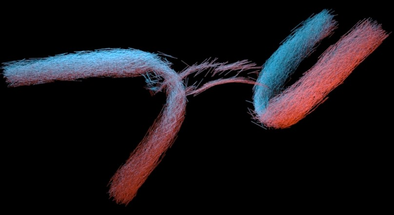
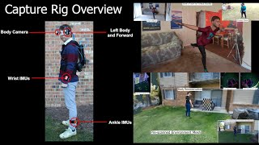
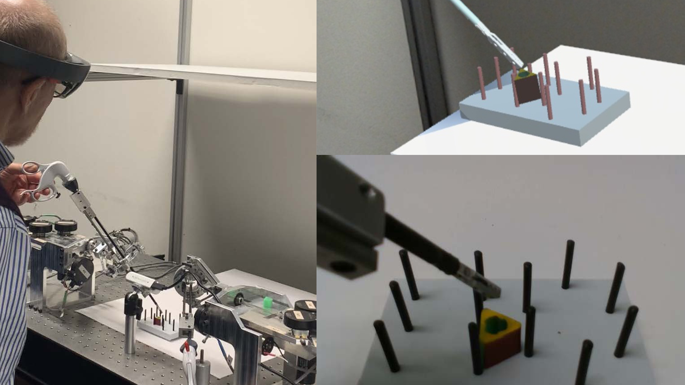

Fan Feng 冯梵
Fan Feng is a first year PhD student at Dartmouth College advised by Prof. Bo Zhu.
Her research interests include physics-based simulation and computer graphics in general.
This site shows her publications, projects and miscellaneous art works.
She recieved B.S. in Computer Science and B.A in Mathematics and minor in studio arts form University of North Carolina at Chapel Hill, advised by prof. Henry Fuchs.
Email: fan.feng.gr@dartmouth.edu or fanfengng@yahoo.com
Publications

Impulse Fluid Simulation
IEEE Transactions on Visualization and Computer Graphics (TVCG)
Fan Feng, Jinyuan Liu, Shiying Xiong, Shuqi Yang, Yaorui Zhang, Bo Zhu
[paper] [webpage][video]

Clebsch Gauge Fluid
ACM Transactions on Graphics (SIGGRAPH 2021)
Shuqi Yang, Shiying Xiong, Yaorui Zhang, Fan Feng, Jinyuan Liu, Bo Zhu
[paper] [webpage]

Incompressible Flow Simulation on Vortex Segment Clouds
ACM Transactions on Graphics (SIGGRAPH 2021)
Shiying Xiong, Rui Tao, Yaorui Zhang, Fan Feng, Bo Zhu
[paper] [webpage]

Mobile, Egocentric Human Body Motion Reconstruction Using Only Eyeglasses-mounted Cameras and a Few Body-worn Inertial Sensors
IEEE Virtual Reality and 3D User Interfaces (IEEE VR 2021), March, 2021 (a Best Conference Paper Award)
Young-Woon Cha, Husam Shaik, Qian Zhang, Fan Feng, Adrian Ilie, Andrei State, and Henry Fuchs
[paper] [video]
[presentation] [project]

Enhancing a laparoscopy training system with augmented reality visualization
2019 Spring Simulation Conference (SpringSim)
Hao Jiang, Siqing Xu, Andrei State, Fan Feng, Henry Fuchs, Minsik Hong, Jerzy Rozenblit
[paper]